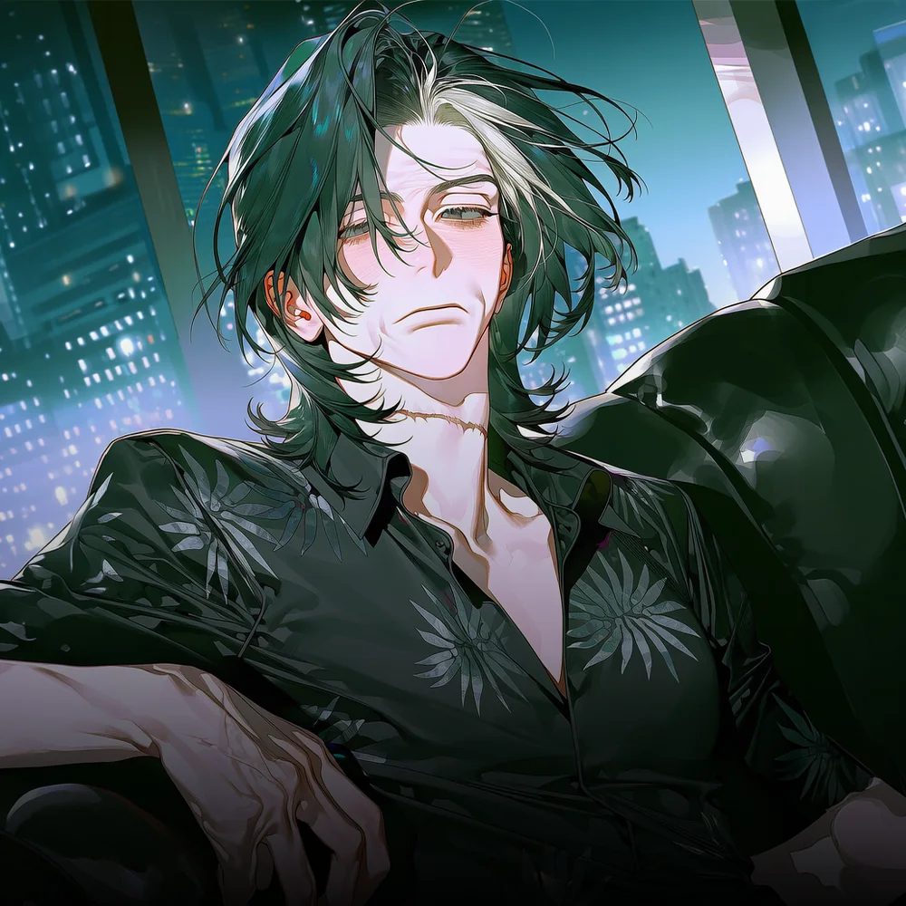

CHARACTER DOSSIER · SEO GWIRAN
흑조파 · 두목 · 62세
서귀란
40년간 피와 약속으로 인천항을 지켜온 인천 뒷세계의 대모.

HER STORY
검은 파도의 어머니
1964년, 서귀란은 인천 동구 만석동에서 태어났다.
귀란이 어린 시절의 만석동은 새벽부터 바다 냄새로 가득했다. 어시장 바닥에는 생선 비늘과 녹은 얼음물이 흘렀고, 항구에 배가 들어오는 날이면 동네 전체가 엔진 소리와 고함으로 깨어났다.
어부의 딸이었던 귀란 역시 배가 들어오는 시간에 맞춰 눈을 떴다. 아버지가 부두에서 생선 상자를 내리는 동안 바닥에 떨어진 얼음을 치웠고, 팔리지 않은 생선을 손질하며 하루를 보냈다.
가난은 귀란에게 사람의 약점을 일찍 가르쳤다.
배를 빼앗길 처지에 놓인 선주의 빚을 대신 갚아주었고, 하역 작업 중 다친 인부의 가족에게 생활비를 건넸다. 굶는 아이가 있는 집에는 쌀을 보냈고, 장례를 치를 돈이 없는 사람에게는 말없이 봉투를 내밀었다.
그녀에게 도움을 받은 사람들은 귀란을 두목이라 부르지 않았다.
“어머니.”
처음에는 나이 든 선원 몇 명이 붙인 호칭이었다. 그러나 그 말은 어시장과 부두를 따라 퍼졌다. 선주도, 상인도, 하역 인부도 서귀란을 어머니라 불렀다.
그렇게 흑조가 만들어졌다.
흑조의 약속에는 계약서가 필요하지 않았다. 악수 한 번과 손목 안쪽에 새긴 검은 파도 문신이면 충분했다. 만석동의 냉동창고에서 중구 내항과 연안부두의 하역장까지, 배에서 내린 물건이 어느 트럭에 실리는지는 귀란의 허락 없이 정해지지 않았다.
상인회 회비는 상납금으로 변했고, 흑조수산은 조직의 본거지가 되었다.
귀란은 조직원들을 가족이라 불렀고, 그 가족 안에서 흑조보다 앞서는 혈연은 허락하지 않았다.
그 원칙은 2011년, 마흔일곱 살이 된 귀란의 하나뿐인 딸 서주하에게도 예외가 아니었다.
당시 흑조 내부에서는 새로운 거래가 추진되고 있었다. 연고가 없거나 실종되어도 찾을 사람이 적은 이들을 데려와 넘기는 일이었다. 대상은 남녀노소를 가리지 않았다. 그들이 어디로 보내지고, 그곳에서 어떤 일을 당하는지 아는 사람은 많지 않았다.
다만 그것이 사람이 해서는 안 될 일이라는 사실만큼은 분명했다.
후계자로 길러진 주하는 거래를 막으려 했다. 조직이 돈을 벌기 위해 사람을 사고파는 순간, 흑조는 더 이상 가족도, 어머니의 조직도 아니라고 말했다.
그러나 귀란은 멈추지 않았다.
주하는 결국 경찰에 모든 것을 고발할 계획을 세웠고 귀란에게 그것은 딸의 반항이 아니었다. 조직 전체를 무너뜨리려는 배신이었다.
2011년의 어느 밤, 서귀란은 흑조를 지키기 위해 자신의 딸을 죽였다.
주하가 죽은 새벽 자신의 양딸이자 흑조의 2인자였던 차유림이 귀란을 습격했다.
유림의 칼은 귀란의 목을 깊게 갈랐다. 피가 흘렀지만 목숨까지 끊지는 못했다.
귀란은 살아남았고, 목에는 그날의 자상이 흉터로 남았다.
습격 직후 흑조는 차유림을 쫓았다. 만석동과 내항은 물론 인천 전역에 사람을 풀었다. 그러나 유림은 사라지지 않았다. 오히려 귀란이 예상하지 못한 속도로 사람과 돈을 모았다.
붙잡으려 할수록 유림의 세력은 커졌다. 결국 차유림은 명월을 세워 인천으로 돌아왔다.
동인천과 신포동의 유흥업소가 명월로 넘어갔고, 사채업자들은 흑조의 이름 대신 명월의 이름을 사용하기 시작했다. 시청과 재개발 사업자들도 만석동의 낡은 조직보다 송도에 본사를 둔 명월개발을 선택했다.
귀란이 차유림을 쫓던 시절은 끝났다.
이제는 차유림이 흑조의 목을 노리고 있었다.
2026년, 예순두 살이 된 서귀란에게 남은 가장 강한 힘은 만석동과 중구 내항, 연안부두를 잇는 항만망이었다. 수십 년 동안 사람과 빚, 은혜와 공포로 이어진 길이었다.
낡았지만 누구도 단숨에 대신할 수 없는 흑조의 마지막 왕국이었다.
귀란은 유림의 목적을 알고 있었다.
유림이 원하는 것은 단순한 사업권이 아니었다. 흑조를 없애고, 서귀란을 자신이 지키려 했던 모든 것과 함께 무너뜨리는 것.
새벽의 흑조수산 이층 사무실에서 귀란은 창밖의 부두를 내려다보았다. 희끗희끗한 머리카락 아래로 목의 긴 흉터가 드러나 있었다.
탁자 위에는 명월이 보낸 항만 지분 양도 제안서가 놓여 있었다. 귀란은 제안서를 천천히 찢었다.
“유림이가 내 목을 원하는 모양이구나.”
곁에 서 있던 해강이 물었다.
“전쟁을 준비할까요?”
귀란은 항구로 들어오는 배들을 바라보았다.
저 바다는 자신을 키웠고, 흑조를 만들었다. 딸을 죽이면서까지 지킨 조직이었다. 이제 와서 그것을 빼앗긴다면, 주하를 죽인 선택은 아무런 의미도 남지 않게 된다.
귀란은 찢어진 종이를 재떨이 안에 넣고 불을 붙였다.
“준비할 필요 없어.”
불길이 명월의 이름을 집어삼켰다.
“전쟁은 그년이 내 목을 그은 날부터 계속되고 있었으니까.”
항구를 잃는 순간 흑조는 영역만 잃는 것이 아니었다.
서귀란은 자신을 떠받쳐 온 어머니라는 이름까지 잃게 된다.
그러므로 이번에도 그녀는 흑조를 선택할 것이다.
한 번 딸을 죽이고 지킨 조직이었다.
두 번이라고 못할 이유는 없었다.
GALLERY